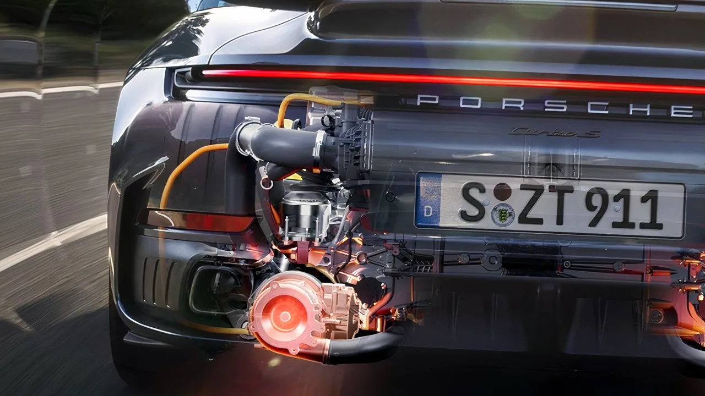
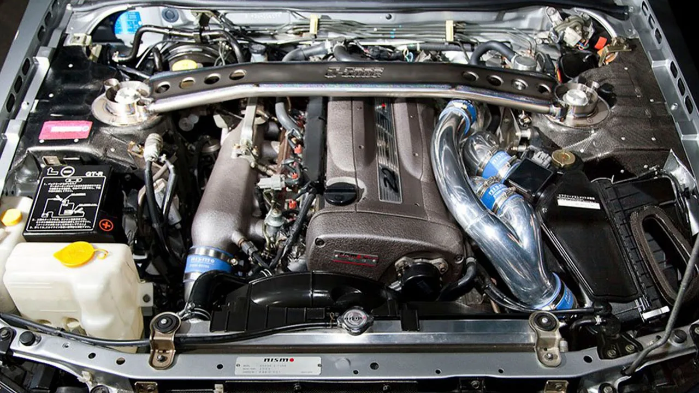
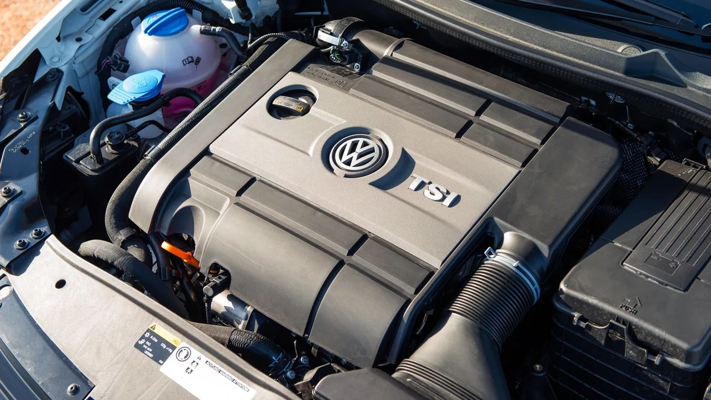
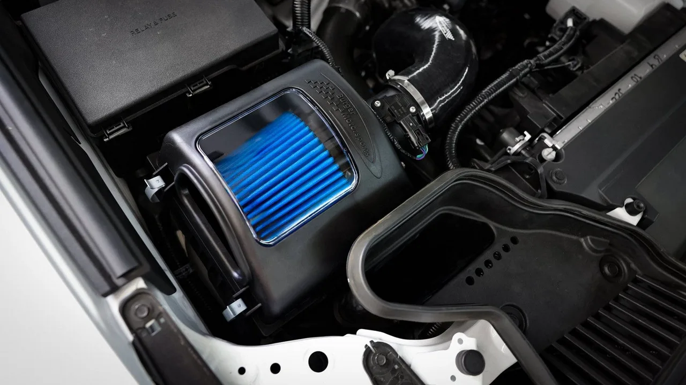

▲ ECU 기판. 하드웨어를 바꾸지 않고 제어 맵만 조정해 출력을 올리는 방식이다
부품을 하나도 바꾸지 않고 50마력을 올린다는 이야기가 있습니다. 과장처럼 들리지만 터보 엔진에서는 원리가 성립합니다.
핵심은 하드웨어가 이미 여유를 갖고 설계돼 있다는 점입니다. 제조사는 다양한 기후와 연료 품질, 정비 수준을 가정해 보수적으로 세팅합니다. ECU 맵을 조정하면 그 여유분을 끌어 쓰게 됩니다.
1. 어디서 힘이 나오나
터보 엔진의 출력은 결국 태울 수 있는 공기의 양이 결정합니다. ECU가 웨이스트게이트나 가변 지오메트리 시스템을 조정해 부스트압을 올리면, 같은 터보차저에서 더 많은 공기가 들어갑니다.

▲ 터보차저. 부스트압을 얼마나 올릴지는 하드웨어가 아니라 제어 맵이 정한다 ⓒ CarBuzz
공기가 늘면 연료도 늘려야 합니다. 여기에 점화시기까지 함께 조정하면 연소 효율이 올라갑니다. 이 세 가지를 동시에 손보는 것이 이른바 맵 튜닝입니다.

▲ 터보 엔진은 제어 여유가 크기 때문에 소프트웨어 변경만으로도 출력 변화가 크다 ⓒ CarBuzz
자연흡기 엔진은 사정이 다릅니다. 부스트압이라는 변수 자체가 없어 공연비와 점화시기만 만질 수 있고, 50마력 수준의 증가는 나오지 않습니다. "소프트웨어로 큰 폭 상승"이라는 이야기는 사실상 터보 전용입니다.
2. 차종별로 보고된 증가폭
실제 수치는 차종에 따라 크게 갈립니다. 하드웨어 여유가 얼마나 남아 있느냐에 달렸기 때문입니다.
| 차종 | 증가폭 |
|---|---|
| 아우디 RS3 / TT RS | 80마력 이상 |
| 폭스바겐 골프 R(MK8) | 최대 70마력 |
| 아우디 S3(8Y) | 최대 60마력 |
| 혼다 시빅 타입 R(FK8) | 40~50마력 (약 16%) |
| 포드 브롱코 스포츠 | 최대 50마력 |
| 혼다 어코드 2.0T | 최대 40마력 |

▲ 폭스바겐그룹 터보 엔진은 맵 조정 여유가 큰 축으로 알려져 있다 ⓒ CarBuzz
여기서 더 나가면 하드웨어가 필요합니다. 흡기와 배기, 인터쿨러 같은 볼트온 부품을 함께 바꾸면 100마력 이상의 증가도 가능하다고 보고됩니다. 다만 그 지점부터는 "소프트웨어만"이라는 전제가 깨집니다.

▲ 볼트온 부품을 더하면 증가폭은 커지지만 승인과 검사 문제도 함께 커진다 ⓒ CarBuzz
3. 국내에서는 승인이 먼저다
여기부터가 국내 운전자에게 중요한 대목입니다. 해외 기사에서 다루는 수치는 규제 환경이 다른 시장의 이야기입니다.
자동차관리법 제34조에 따라, 등록된 자동차의 구조·장치를 변경하려면 한국교통안전공단의 사전 승인을 받아야 합니다. 변경 내용이 안전기준에 적합해야 승인이 납니다.
▲ 시빅 타입 R FK8은 40~50마력 증가가 보고된 대표 사례다 ⓒ CarBuzz
배출가스는 또 다른 축입니다. 출력을 제작사 기준 이상으로 인위적으로 올리면 연소 조건이 바뀌고, 그 결과 배출가스 수치가 달라질 수 있습니다. 배출가스 기준을 초과하면 환경 관련 법령 위반 소지가 생깁니다.
📍 확인해야 할 순서
① 해당 변경이 승인 대상인지 — 구조·장치 변경에 해당하는지 확인
② 대상이라면 한국교통안전공단 사전 승인 절차
③ 배출가스 기준 충족 여부와 인증된 제품인지
④ 정기검사에서 문제가 되지 않는지
⑤ 제조사 보증에 미치는 영향
이 다섯 가지를 확인하지 않은 채 출력만 보고 진행하면, 검사 불합격이나 보증 거절로 되돌아옵니다.
4. 내구성과 보증이라는 비용
출력이 오르면 부하도 함께 오릅니다. 부스트압을 높이면 터보차저, 피스톤, 커넥팅로드, 변속기까지 전달되는 힘이 커집니다. 제조사가 설정한 여유분은 내구성을 위한 마진이기도 하기 때문입니다.
실제로 지적되는 부작용은 두 가지입니다. 연비 악화와 엔진 부품 내구성 저하입니다. 출력을 끌어올린 만큼 열과 압력이 늘어나는 구조라 피할 수 없는 대가입니다.
완화 방법은 제한적입니다. 가능한 한 옥탄가가 높은 연료와 품질이 좋은 엔진오일을 쓰라는 것이 일반적인 권고입니다. 다만 이는 부담을 줄이는 것이지 없애는 것이 아닙니다.
보증도 함께 고려해야 합니다. 제조사가 ECU 변경 이력을 확인하면 관련 부위의 보증이 제한될 수 있습니다. 신차 보증 기간이 남아 있다면 이 손실이 출력 증가분보다 클 수 있습니다.
5. 결론은 목적에 달렸다
기술적으로는 명확합니다. 터보 엔진에서 ECU 맵 조정으로 40~80마력을 얻는 것은 실재하는 이야기이고, 하드웨어 교체 없이 가능한 것도 맞습니다.
다만 그 이야기는 제도와 내구성을 뺀 조건에서 성립합니다. 국내에서 등록 차량을 운행하려면 승인·배출가스·정기검사라는 절차가 그대로 남아 있고, 이걸 통과하지 못하면 출력이 얼마든 의미가 없습니다.
서킷 전용 차량이라면 계산이 달라집니다. 반대로 일상 주행용 차량이라면, 남은 보증과 검사 주기를 감안했을 때 얻는 것보다 잃는 것이 클 수 있습니다.
정리하면 이렇습니다. "소프트웨어만 바꾸면 된다"는 문장에서 빠진 것은 하드웨어가 아니라 제도와 시간입니다. 출력은 즉시 오르지만, 승인·배출가스·내구성은 그 뒤에 순서대로 청구서를 보냅니다.